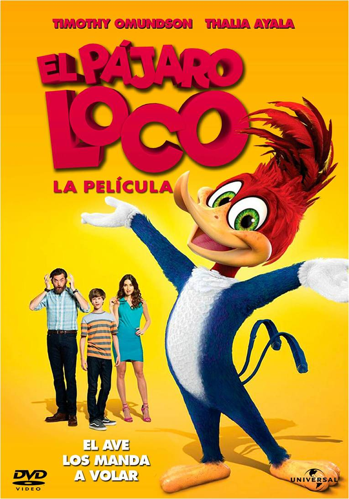

Wall-e ¿Qué ocurriría si la humanidad debiera abandonar la Tierra y alguien se olvidara de apagar el último robot? Tras setecientos solitarios años haciendo aquello para lo que fue construido, esto es, limpiar el planeta , WALL•E descubre una nueva misión en su vida cuando se encuentra con un lustroso robot explorador llamado EVA. Ver
Hera de hielo: Choque de mundos La épica persecución de Scrat de su bellota lo catapulta fuera de la Tierra donde inicia unos eventos cósmicos que amenazan al planeta. Para salvarse del peligro, Manny, Sid, Diego, y el resto de la manada se e mbarcan en una aventura para intentar detener el impacto de un meteoro que destruiría el mundo. Ver
 Pajaro loco El hiperactivo pájaro de cabeza roja entra en una guerra territorial con un gran abogado de ciudad que quiere destruir su hogar para construir una casa a la orilla de un lago. Ver
Locos por las nueces 2 Surly y sus amigos descubren que el alcalde de la ciudad quiere construir un gran parque de diversiones encima de su hogar. Ahora los animales deben tratar de evitarlo y recuperar el parque. Ver
OLÉ Después de que Ferdinand, un gran toro con un gran corazón, sea confundido con una bestia peligrosa, es capturado y alejado de su hogar. Determinado a regresar con su familia, reúne a un grupo de inadaptados para una increíble aventura. Ver
Mi villano favorito 3 Gru está pasando por una crisis de identidad cuando conoce a su encantador y mucho más exitoso hermano gemelo, Dru, quien quiere hacer equipo con él para un último golpe criminal. Ver